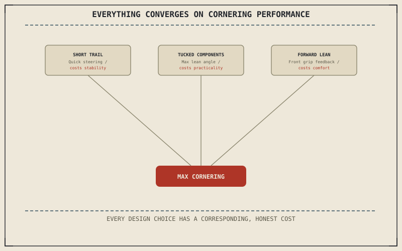

Chapter 14.1 established the standard's deliberately centered geometry and ergonomics as a baseline every specialized category moves away from. A sportbike moves away from that center further and more consistently than almost any other category, and every part of its design traces back to a single target: cornering performance, pursued with few compromises made in its favor.
Chapter 14.1 closed by pointing to the first genuinely specialized category, defined by exactly what it optimizes away from the neutral baseline. This chapter is that category.
Aggressive Geometry: Shorter Trail, Quicker Steering
Chapter 4.3 established rake and trail as the two numbers shaping steering urgency, and a sportbike pushes both toward the quick-turning end of that range Chapter 14.1 described the standard sitting centered within. This produces the sharp, immediate steering response a sportbike is known for, directly at the cost of the effortless, hands-off straight-line stability Chapter 4.4's self-centering trail effect provides more generously at a more relaxed setting.
Maximizing Lean Angle
Chapter 4.7 already named a sportbike's tucked-in components and high ground clearance as the reason it can lean dramatically further than a cruiser's low-slung floorboards and pipes before anything touches down. Nearly every component on a sportbike — exhaust routing, footpeg position, fairing shape — is placed with that clearance specifically in mind, making maximum lean angle a design target the whole machine is built around rather than an incidental side effect of anything else.
A sportbike's short trail, tucked components, and forward-leaning riding position all trace back to one target — cornering performance — and each one costs something a standard doesn't have to give up: straight-line stability, all-day comfort, or wrist and neck strain over distance.

A diagram showing a sportbike's design choices — short trail, tucked-in components, forward-leaning riding position — all converging on a single target of maximum cornering performance, each with a corresponding cost against a standard's neutral baseline.
The Forward-Leaning Position Isn't Just Aerodynamic
A sportbike's low bars and rearward, elevated pegs shift a rider's weight forward and load the front tyre more directly during cornering, feeding back the kind of direct front-end grip information the friction circle Chapter 6.4 described depends on a rider reading accurately at the limit. That same tucked position is exactly the ergonomic extreme Chapter 13.4 described a comfort-driven modification moving away from — real strain on wrists, shoulders, and neck over a long ride, accepted specifically because it serves cornering feedback rather than being an oversight.
A Common Misconception, Cleared Up Early
It's a common assumption that a sportbike is simply "the fast one," objectively the best motorcycle among the categories this part covers because it's the most extreme. Chapter 14.1 already established that every specialized category loses on ground that isn't its own, and a sportbike is the clearest example: it trades away straight-line stability, all-day comfort, and low-speed manageability entirely in service of a single target most riders spend only a small fraction of their actual riding time exercising.
Where This Leads
Chapter 14.3 turns to cruisers next, a category built around almost the exact opposite target: relaxed, low-speed comfort rather than cornering performance.
Key Concepts to Remember
- Shorter trail gives a sportbike quicker, more urgent steering at the cost of the standard's effortless straight-line stability.
- Tucked-in components and high ground clearance push maximum lean angle further than a cruiser's low-slung hardware allows.
- The forward-leaning riding position feeds front-tyre grip feedback for cornering, accepted at a real, honest cost in comfort over distance.
Cross-References
| ← Ch. 4.3 | Established rake and trail shaping steering urgency; this chapter treats a sportbike's short trail as that urgency pushed to an extreme. |
| ← Ch. 4.7 | Established maximum lean angle as set by whatever component hangs lowest; this chapter treats a sportbike's whole layout as built around maximizing that clearance. |
| ← Ch. 6.4 | Established the friction circle as the tyre's total available grip; this chapter connects front-tyre loading from a tucked position to reading that grip accurately. |
| → Ch. 14.3 | Covers cruisers, built around relaxed, low-speed comfort instead. |